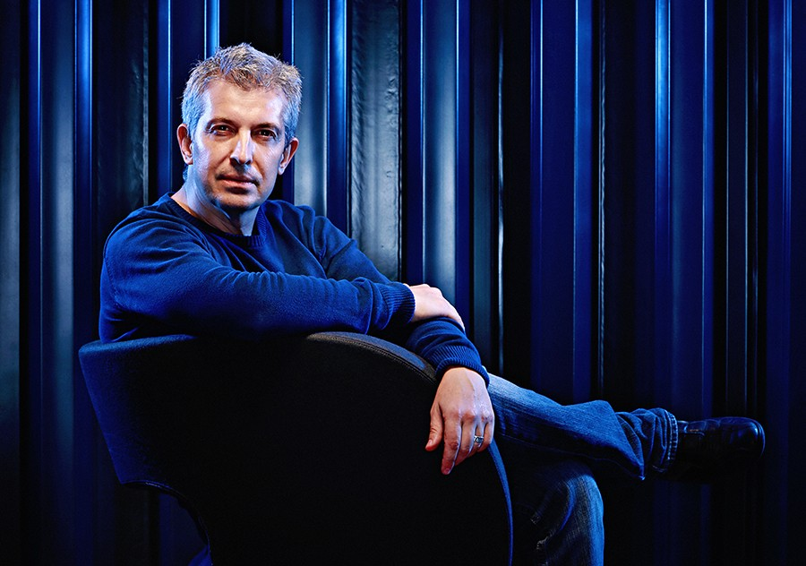

— БИОГРАФИЯ
За мен
Петър Пешев
Фотограф с две десетилетия опит и магистърска степен по фотография. Специализира в корпоративна и рекламна фотография, мода и портрет.
Качествената фотография предизвиква емоции и насочва съзнанието към положителното и красивото. Една успешна фотосесия е източник на вдъхновение и стремеж — мога да бъда Ваш партньор в осъществяването им.
Бил съм официален фотограф на Philip Morris България (2008–2014) и съм заснемал рекламните кампании на Besson Chaussures в България и чужбина в продължение на няколко години. Преподавал съм фотография две години в АМТИИ Пловдив и Пловдивски Университет.
Работя с филмова и дигитална фотография, а също така с мокър колодиев процес (амбротипия).
Интервю на GSpace →


— ПАРТНЬОРИ
Клиенти
- Fibank
- Philip Morris България
- Raiffeisenbank
- Bulgartabac
- Kempinski Hotel Grand Arena Bansko
- Effortel
- Alcatel-Lucent
- Austria Telekom
- Vistra
- Le Monde
- Getty Images Inc.
- Filmmagic
- Leo Burnett
- Golden Line Hotel Golden Sands
- WRC Hotel Balchik
- Replica
- Gido Shoes
- Visages Model Agency
- SPD Munich
- TOYOTA България
- Lettera Publishing House
- Marzia Bags
- Miro Fashion
- Biomeda Ltd.
- Министерски съвет на България
- Занаятчийско Сдружение Пловдив
- Dana Import Cologne
- Гръцко Посолство Пловдив
- Hair Magazine
- Hot Couture
- Italian Fashion Boutique
- Ytong България
- Zepter България
- M-Tel Inc.
- KUK България
- Община Пловдив
- Музикален театър Пловдив
- Пловдивска Държавна Опера Балет
- Popstar! Magazine
- Por Ti Magazine
- Radio FM+
- Балетно Студио Буратино
- US Weekly Magazine
- Viaillet Perfection
- Yuri Gagarin-BT Corporation